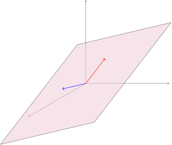

Linear Algebra for Team-Based Inquiry Learning
2023 Edition
| Steven Clontz | Drew Lewis |
|---|---|
| University of South Alabama | |
August 24, 2023
Section 2.3: Subspaces (EV3)
Definition 2.3.1
A subset \(S\) of a vector space is called a subspace provided it is equal to the span of a set of vectors from that space.
Activity 2.3.1 (~5 min)
Consider two non-colinear vectors in \(\IR^3\text{.}\) If we look at all linear combinations of those two vectors (that is, their span), we end up with a planar subspace within \(\IR^3\text{.}\) Call this plane \(S\text{.}\)
Part 1.
For any unspecified \(\vec{u}, \vec{v} \in S\text{,}\) is it the case that \(\vec{u} + \vec{v} \in S\text{?}\)
Yes.
No.
Activity 2.3.1 (~5 min)
Consider two non-colinear vectors in \(\IR^3\text{.}\) If we look at all linear combinations of those two vectors (that is, their span), we end up with a planar subspace within \(\IR^3\text{.}\) Call this plane \(S\text{.}\)
Part 2.
For any unspecified \(\vec{u} \in S\) and \(c\in\IR\text{,}\) is it the case that \(\vec{u}+\left[\begin{array}{c} c \\ c \\ c \end{array}\right] \in S\text{?}\)
Yes.
No.
Activity 2.3.1 (~5 min)
Consider two non-colinear vectors in \(\IR^3\text{.}\) If we look at all linear combinations of those two vectors (that is, their span), we end up with a planar subspace within \(\IR^3\text{.}\) Call this plane \(S\text{.}\)
Part 3.
For any unspecified \(\vec{u} \in S\) and \(c\in\IR\text{,}\) is it the case that \(c\vec{u} \in S\text{?}\)
Yes.
No.
Fact 2.3.2
A subset \(S\) of a vector space is a subspace provided:
the subset is closed under addition: for any \(\vec{u},\vec{v} \in S\text{,}\) the sum \(\vec{u}+\vec{v}\) is also in \(S\text{.}\)
the subset is closed under scalar multiplication: for any \(\vec{u} \in S\) and scalar \(c \in \IR\text{,}\) the product \(c\vec{u}\) is also in \(S\text{.}\)
Observation 2.3.3
Note the similarities between a planar subspace spanned by two non-colinear vectors in \(\IR^3\text{,}\) and the Euclidean plane \(\IR^2\text{.}\) While they are not the same thing (and shouldn’t be referred to interchangably), algebraists call such similar spaces isomorphic; we’ll learn what this means more carefully in a later chapter.
Activity 2.3.2 (~10 min)
Let \(S=\setBuilder{\left[\begin{array}{c} x \\ y \\ z \end{array}\right]}{ x+2y+z=0}\text{.}\)
Part 1.
Let’s assume that \(\vec{v}=\left[\begin{array}{c} x \\ y \\ z \end{array}\right]\) and \(\vec{w} = \left[\begin{array}{c} a \\ b \\ c \end{array}\right] \) are in \(S\text{.}\) What are we allowed to assume?
\(x+2y+z=0\text{.}\)
\(a+2b+c=0\text{.}\)
Both of these.
Neither of these.
Activity 2.3.2 (~10 min)
Let \(S=\setBuilder{\left[\begin{array}{c} x \\ y \\ z \end{array}\right]}{ x+2y+z=0}\text{.}\)
Part 2.
Which equation must be verified to show that \(\vec v+\vec w = \left[\begin{array}{c} x+a \\ y+b \\ z+c \end{array}\right]\) also belongs to \(S\text{?}\)
\((x+a)+2(y+b)+(z+c)=0\text{.}\)
\(x+a+2y+b+z+c=0\text{.}\)
\(x+2y+z=a+2b+c\text{.}\)
Activity 2.3.2 (~10 min)
Let \(S=\setBuilder{\left[\begin{array}{c} x \\ y \\ z \end{array}\right]}{ x+2y+z=0}\text{.}\)
Part 3.
Use the assumptions from (a) to verify the equation from (b).
Activity 2.3.2 (~10 min)
Let \(S=\setBuilder{\left[\begin{array}{c} x \\ y \\ z \end{array}\right]}{ x+2y+z=0}\text{.}\)
Part 4.
Is \(S\) is a subspace of \(\IR^3\text{?}\)
Yes
No
Not enough information
Activity 2.3.2 (~10 min)
Let \(S=\setBuilder{\left[\begin{array}{c} x \\ y \\ z \end{array}\right]}{ x+2y+z=0}\text{.}\)
Part 5.
Show that \(k\vec v=\left[\begin{array}{c}kx\\ky\\kz\end{array}\right]\) also belongs to \(S\) for any \(k\in\IR\) by verifying \((kx)+2(ky)+(kz)=0\) under these assumptions.
Activity 2.3.2 (~10 min)
Let \(S=\setBuilder{\left[\begin{array}{c} x \\ y \\ z \end{array}\right]}{ x+2y+z=0}\text{.}\)
Part 6.
Is \(S\) is a subspace of \(\IR^3\text{?}\)
Yes
No
Not enough information
Activity 2.3.3 (~10 min)
Let \(S=\setBuilder{\left[\begin{array}{c} x \\ y \\ z \end{array}\right]}{ x+2y+z=4}\text{.}\)
Part 1.
Which of these statements is valid?
\(\left[\begin{array}{c} 1 \\ 1 \\ 1 \end{array}\right]\in S\text{,}\) and \(\left[\begin{array}{c} 2 \\ 2 \\ 2 \end{array}\right]\in S\text{,}\) so \(S\) is a subspace.
\(\left[\begin{array}{c} 1 \\ 1 \\ 1 \end{array}\right]\in S\text{,}\) and \(\left[\begin{array}{c} 2 \\ 2 \\ 2 \end{array}\right]\in S\text{,}\) so \(S\) is not a subspace.
\(\left[\begin{array}{c} 1 \\ 1 \\ 1 \end{array}\right]\in S\text{,}\) but \(\left[\begin{array}{c} 2 \\ 2 \\ 2 \end{array}\right]\not\in S\text{,}\) so \(S\) is a subspace.
\(\left[\begin{array}{c} 1 \\ 1 \\ 1 \end{array}\right]\in S\text{,}\) but \(\left[\begin{array}{c} 2 \\ 2 \\ 2 \end{array}\right]\not\in S\text{,}\) so \(S\) is not a subspace.
Activity 2.3.3 (~10 min)
Let \(S=\setBuilder{\left[\begin{array}{c} x \\ y \\ z \end{array}\right]}{ x+2y+z=4}\text{.}\)
Part 2.
Which of these statements is valid?
\(\left[\begin{array}{c} 1 \\ 1 \\ 1 \end{array}\right]\in S\text{,}\) and \(\left[\begin{array}{c} 0 \\ 0 \\ 0 \end{array}\right]\in S\text{,}\) so \(S\) is a subspace.
\(\left[\begin{array}{c} 1 \\ 1 \\ 1 \end{array}\right]\in S\text{,}\) and \(\left[\begin{array}{c} 0 \\ 0 \\ 0 \end{array}\right]\in S\text{,}\) so \(S\) is not a subspace.
\(\left[\begin{array}{c} 1 \\ 1 \\ 1 \end{array}\right]\in S\text{,}\) but \(\left[\begin{array}{c} 0 \\ 0 \\ 0 \end{array}\right]\not\in S\text{,}\) so \(S\) is a subspace.
\(\left[\begin{array}{c} 1 \\ 1 \\ 1 \end{array}\right]\in S\text{,}\) but \(\left[\begin{array}{c} 0 \\ 0 \\ 0 \end{array}\right]\not\in S\text{,}\) so \(S\) is not a subspace.
Remark 2.3.4
In summary, you can check any of the following to show that a nonempty subset \(W\) isn’t a subspace:
Find \(\vec u,\vec v\in W\) such that \(\vec u+\vec v\not\in W\text{.}\)
Find \(c\in\IR,\vec v\in W\) such that \(c\vec v\not\in W\text{.}\)
Show that \(\vec 0\not\in W\) (same as the last step, with \(c=0\)).
If you cannot do any of these, then \(W\) can be proven to be a subspace by doing both of the following:
Prove that \(\vec u+\vec v\in W\) whenever \(\vec u,\vec v\in W\text{.}\)
Prove that \(c\vec v\in W\) whenever \(c\in\IR,\vec v\in W\text{.}\)
Activity 2.3.4 (~20 min)
Consider these subsets of \(\IR^3\text{:}\)
Part 1.
Show \(R\) isn’t a subspace by showing that \(\vec 0\not\in R\text{.}\)
Activity 2.3.4 (~20 min)
Consider these subsets of \(\IR^3\text{:}\)
Part 2.
Show \(S\) isn’t a subspace by finding two vectors \(\vec u,\vec v\in S\) such that \(\vec u+\vec v\not\in S\text{.}\)
Activity 2.3.4 (~20 min)
Consider these subsets of \(\IR^3\text{:}\)
Part 3.
Show \(T\) isn’t a subspace by finding a vector \(\vec v\in T\) such that \(2\vec v\not\in T\text{.}\)
Activity 2.3.5
Consider the following two sets of Euclidean vectors:
Explain why one of these sets is a subspace of \(\mathbb{R}^2\) and one is not.
Activity 2.3.6
Consider the following attempted proof that
Let \(\left[\begin{array}{c} x \\ y \end{array}\right]\in U\text{,}\) so we know that \(x+y=xy\text{.}\) We want to show \(k\left[\begin{array}{c} x \\ y \end{array}\right]=\left[\begin{array}{c} kx \\ ky \end{array}\right]\in U\text{,}\) that is, \((kx)+(ky)=(kx)(ky)\text{.}\) This is verified by the following calculation:
\begin{align*} (kx)+(ky)&=(kx)(ky)\\ k(x+y)&=k^2xy\\ 0[k(x+y)]&=0[k^2xy]\\ 0&=0 \end{align*}
Is this reasoning valid?
Yes
No
Remark 2.3.5
Proofs of an equality \(\mathrm{LEFT}=\mathrm{RIGHT}\) should generally be of one of these forms:
Using a chain of equalities:
\begin{align*} \mathrm{LEFT} &= \cdots\\ &= \cdots\\ &= \cdots\\ &= \mathrm{RIGHT} \end{align*}Alternatively:\begin{align*} \mathrm{LEFT} &= \cdots & \mathrm{RIGHT} &=\cdots\\ &= \cdots & &= \cdots\\ &= \cdots & &= \cdots\\ &= \mathrm{SAME}& &= \mathrm{SAME} \end{align*}When the assumption \(\mathrm{THIS}=\mathrm{THAT}\) is already known or assumed to be true :
\begin{align*} && \mathrm{THIS} &= \mathrm{THAT}\\ & \Rightarrow& \cdots &= \cdots\\ & \Rightarrow& \cdots &= \cdots\\ & \Rightarrow& \mathrm{LEFT} &= \mathrm{RIGHT} \end{align*}